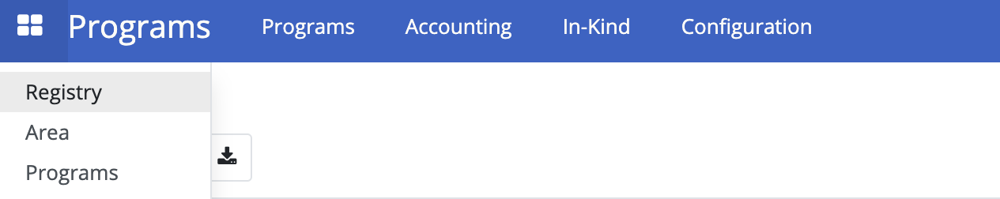

Setting Up Using Python Package Manager
Contents
Setting Up Using Python Package Manager#
Introduction#
This guide provides a comprehensive steps on setting up and configuring OpenSPP using PyPi package manager. This guide is specifically tailored for users who are setting up OpenSPP for the first time.
Prerequisites#
Instance running Ubuntu 22.04 LTS The steps have been tested on Ubuntu 22.04 LTS (Jammy). Other Linux distributions may require slightly different steps.
Note that the x64 platform is the only supported platform. ARM is not supported by OpenSPP. Mac and Windows platforms are not supported natively by OpenSPP.
Objective#
This guide aims to help you install, configure components for a functional OpenSPP instance.
Step-by-step#
Note that all examples are for Ubuntu with the bash shell as the default shell. If you are using a different shell, such as zsh, you will need to adapt the examples to fit your environment.
If you don’t have a Postgresql server with PostGIS installed, install Postgresql using the official documentation.
sudo apt update;
sudo apt install postgresql postgresql-client postgis;
In order for OpenSPP’s asynchronous tasks to work, there is a need to install and configure a web proxy for the WebSockets communication. In this how-to guide, we’ll be installing and configuring nginx. This example will also install UFW (Uncomplicated Firewall), to make configuring nginx easier.
sudo apt install nginx ufw
sudo ufw enable
sudo ufw allow 'Nginx HTTP'
sudo ufw allow 8072/tcp
sudo ufw reload
touch /etc/nginx/sites-available/openspp.conf
ln -s /etc/nginx/sites-available/openspp.conf /etc/nginx/sites-enabled/openspp.conf
Open your preferred text editor, and put the following content in /etc/nginx/sites-available/openspp.conf
proxy_http_version 1.1;
proxy_set_header Host $host;
upstream odoo {
server 127.0.0.1:17069;
}
upstream odoochat {
server 127.0.0.1:8072;
}
map $http_upgrade $connection_upgrade {
default upgrade;
'' close;
}
server {
listen 8080;
server_name localhost 127.0.0.1;
proxy_read_timeout 720s;
proxy_connect_timeout 720s;
proxy_send_timeout 720s;
# log
access_log /var/log/nginx/odoo.access.log;
error_log /var/log/nginx/odoo.error.log;
# Redirect requests to odoo backend server
location / {
proxy_set_header X-Forwarded-Host $host;
proxy_set_header X-Forwarded-For $proxy_add_x_forwarded_for;
proxy_set_header X-Forwarded-Proto $scheme;
proxy_set_header X-Real-IP $remote_addr;
proxy_redirect off;
proxy_pass http://odoo;
}
# Redirect websocket requests to odoo gevent port
location /websocket {
proxy_pass http://odoochat;
proxy_set_header X-Forwarded-Host $host;
proxy_set_header X-Forwarded-Proto $scheme;
proxy_set_header X-Real-IP $remote_addr;
proxy_set_header Upgrade $http_upgrade;
proxy_set_header Connection $connection_upgrade;
proxy_set_header X-Forwarded-For $proxy_add_x_forwarded_for;
}
# common gzip
gzip_types text/css text/less text/plain text/xml application/xml application/json application/javascript;
gzip on;
client_body_in_file_only clean;
client_body_buffer_size 32K;
client_max_body_size 500M;
sendfile on;
send_timeout 600s;
keepalive_timeout 300;
}
Test your nginx configuration using “nginx -t”, and if all looks good, restart nginx:
sudo nginx -t
sudo servicectl restart nginx
You should also validate that nginx is operational through the “status” command
sudo servicectl status nginx
If you don’t have Pyenv installed, please install it using the official documentation. Be sure to also install the Python build dependencies.
sudo apt install build-essential libssl-dev zlib1g-dev libbz2-dev \
libreadline-dev libsqlite3-dev curl git libncursesw5-dev xz-utils tk-dev \
libxml2-dev libxmlsec1-dev libffi-dev liblzma-dev
curl https://pyenv.run | bash
echo 'export PYENV_ROOT="$HOME/.pyenv"' >> $HOME/.bashrc
echo '[[ -d $PYENV_ROOT/bin ]] && export PATH="$PYENV_ROOT/bin:$PATH"' >> ~/.bashrc
echo 'eval "$(pyenv init -)"' >> $HOME/.bashrc
echo 'eval "$(pyenv virtualenv-init -)"' >> $HOME/.profile
If you don’t have the Pyenv plugin pyenv-virtualenv installed, please install it using the official documentation.
git clone https://github.com/pyenv/pyenv-virtualenv.git $(pyenv root)/plugins/pyenv-virtualenv
Restart the Bash shell/terminal session to reload your environment.
exec "$SHELL"
For Odoo, install the Linux packages “libldap2-dev”, “libsasl2-dev”, “libpq-dev”, and “libcairo2-dev”. On Ubuntu, do.
sudo apt install libldap2-dev libsasl2-dev libpq-dev libcairo2-dev
Install wkhtmltopdf
curl -o wkhtmltox.deb -sSL https://github.com/wkhtmltopdf/packaging/releases/download/0.12.6.1-3/wkhtmltox_0.12.6.1-3.jammy_amd64.deb
sudo apt install -y --no-install-recommends ./wkhtmltox.deb
Install Odoo in a Python Virtual environment using Python 3.10.x by following these steps
pyenv install 3.10.14
pyenv virtualenv 3.10.14 openspp
pyenv activate openspp
pip install --upgrade pip
git clone --single-branch -b 17.0 --depth 1 https://github.com/odoo/odoo.git
pip install --editable ./odoo
pip install -r odoo/requirements.txt
Clone the OpenSPP Github repo.
git clone --single-branch -b 17.0 https://github.com/OpenSPP/openspp-modules.git
Install all dependencies
pip install rlPyCairo
pip install -r openspp-modules/openspp-requirements.txt
Create a Postgresql user for OpenSPP and a database, then configure the permissions. When prompted to enter a password for the Odoo user, write it down as you will need it later.
sudo -u postgres createuser -d -R -S -P odoo
sudo -u postgres createdb odoo
sudo -u postgres psql -d odoo -c "GRANT USAGE ON SCHEMA public TO odoo; GRANT CREATE ON SCHEMA public TO odoo; GRANT ALL PRIVILEGES ON ALL TABLES IN SCHEMA public TO odoo; GRANT ALL PRIVILEGES ON ALL SEQUENCES IN SCHEMA public TO odoo; GRANT ALL PRIVILEGES ON ALL FUNCTIONS IN SCHEMA public TO odoo;"
sudo su -l postgres -c 'echo "host odoo odoo 127.0.0.1/32 scram-sha-256" >> `psql -c "show hba_file" | sed -n "3p"`'
Enable PostGIS
sudo -u postgres psql -d odoo -c "CREATE EXTENSION postgis;"
sudo -u postgres psql -d odoo -c "CREATE EXTENSION postgis_topology;"
Restart Postgres
sudo systemctl restart postgresql
OpenSPP requires that asynchronous queues are used, and the queue configuration needs to be provided through Odoo’s configuration file. You can read more about the configuration. Create a file “$HOME/odoo.cfg” using your preferred text editor and add the following to allow OpenSPP to remain responsive while the asynchronous tasks are running:
[queue_job]
channels = root:4
Start Odoo, initiating the database (the “-i base,queue_job” parameter)
python odoo/odoo-bin -d odoo -r odoo -w YOUR_PASSWORD --db_host=127.0.0.1 -p 17069 --workers=4 --gevent-port=8072 --proxy-mode --config=$HOME/odoo.cfg -i base,queue_job
Note: for subsequent starts of Odoo, remove the “-i base,queue_job” parameter and use:
python odoo/odoo-bin -d odoo -r odoo -w YOUR_PASSWORD --db_host=127.0.0.1 -p 17069 --workers=4 --gevent-port=8072 --proxy-mode --config=$HOME/odoo.cfg
Login to Odoo as user admin, with password admin
Go to Settings then activate the developer mode.
Open the "Apps" menu then click "Update Apps List". Click the "Update" button in the "Module Update" popup window.
Remove the default filter “Apps”. 
Search spp_base (For SP-MIS) or spp_farmer_registry_demo (For Farmer Registry).
Click the "Activate" button to install the modules.